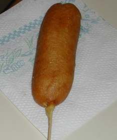

Home
Corn Dogs

Delicious home made corn dog recipe that you can make at home.
This is a recipe for corn dogs that I haven't tried. It could be good, or not.
I don't know. Make it if you want too. You do want to don't you?
Ingredients
- 1 cup cornmeal
- 1 cup all-purpouse flour
- 1/4 cup granulated sugar
- 4 teaspoons baking powder
- 1/4 teaspoon salt
- 1/8 teaspoon pepper
- 1 cup milk
- 1 large egg
- 1 quart vegetable oil
- 2 (16 ounce) packs of hot dogs
- 16 wooden skewers
Directions
- Gather the ingredients
- Combine the cornmeal, flour sugar, baking powder, salt, and pepper in a medium sized mixing bowl.
- Crack the egg into the mixing bowl and then stir the milk in to make a batter.
- Heat the oil in a deep fryer or large saucepan to about 375 degrees F (190 degrees C).
- While the oil is heating, pat the hot dogs dry and insert a skewer into each of them.
- Dip and roll the skewered hot dogs one at a time into the batter until well coated.
- Fry 2 or 3 corn dogs at a time in the preheated oil for about 3 minutes or until lightly browned.
- Drain excess oil on paper towels.
- Serve your corn dogs with mustard, ketchup, or whatever else you like, and enjoy.